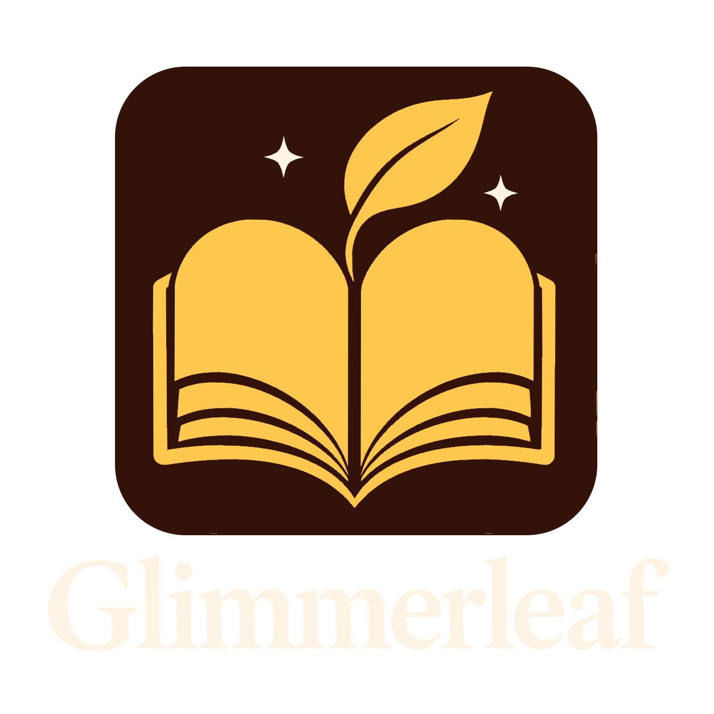

stacked-darkstacked-lightsymbol-dark

 symbol-light
symbol-lightOpening Today should feel like opening a journal at its bookmark. The day chip marks the place. The serif title names one practice, its illustration suggests something to notice, and the primary button starts it. Espresso ink and parchment carry the warmth of the tea poster into a legible reading surface. Gold is reserved for the day, the page edges and small moments of completion. Photography belongs to the campaign. Inside the app, nine quiet drawings accompany the writing.
The default accent is the logo brown. Use accent/onAccent for primary actions, accentSoft/ink for chips and glow for decoration. Keep all brand artwork in its original colours. In night mode the controls follow the theme’s lighter accent. Use muted for secondary labels and functional field outlines. Line is a decorative separator.
| Theme | Mode | bg | bg2 | surface | surfaceAlt | ink | muted | accent | onAccent | accentSoft | line | glow | danger | ink min | muted min | onAccent/accent |
|---|---|---|---|---|---|---|---|---|---|---|---|---|---|---|---|---|
| Golden Parchment | day | #F5E2CA | #F9ECDD | #FBF3EA | #F7E7D2 | #321209 | #69554B | #321209 | #FFFFFF | #FAD386 | #C6B09C | #FEC74E | #9C2825 | 12.01 | 4.91 | 17.13 |
| Golden Parchment | night | #1A120D | #221A15 | #2A231E | #332C28 | #FDF4E5 | #D6C4B4 | #FEC74E | #25170F | #433319 | #513D1D | #FEC74E | #FFACA4 | 11.15 | 7.19 | 11.17 |
| Wax Seal | day | #F6EADF | #F9F2EB | #FBF7F2 | #F7EDE4 | #321209 | #69554B | #9B2B2C | #FFFFFF | #EBD3CA | #E0BCB4 | #9B2B2C | #9C2825 | 11.99 | 4.90 | 7.57 |
| Wax Seal | night | #1B0F10 | #231718 | #2B2021 | #34292A | #FDF4E5 | #D6C4B4 | #E9857A | #25170F | #402423 | #4C2B29 | #E9857A | #FFACA4 | 12.86 | 8.29 | 6.71 |
| Amber Glow | day | #F8EBD7 | #FBF2E5 | #FCF7EF | #F9EEDD | #321209 | #69554B | #99450C | #FFFFFF | #EDD7BF | #E1C3A6 | #99450C | #9C2825 | 12.29 | 5.02 | 6.54 |
| Amber Glow | night | #1C1209 | #241A12 | #2C231A | #352C24 | #FDF4E5 | #D6C4B4 | #F4A757 | #25170F | #432D17 | #50361C | #F4A757 | #FFACA4 | 11.83 | 7.63 | 8.70 |
| Rose Quartz | day | #F7EAE7 | #FAF2F0 | #FCF7F5 | #F8EDEB | #321209 | #69554B | #99415E | #FFFFFF | #ECD6D7 | #E0C1C6 | #99415E | #9C2825 | 12.37 | 5.05 | 6.42 |
| Rose Quartz | night | #1B1215 | #231A1D | #2B2325 | #342C2F | #FDF4E5 | #D6C4B4 | #E99CB3 | #25170F | #402B31 | #4C333B | #E99CB3 | #FFACA4 | 11.97 | 7.72 | 8.17 |
| Twilight Violet | day | #F1EBF3 | #F6F2F7 | #F9F7FA | #F3EEF5 | #321209 | #69554B | #6B4A9C | #FFFFFF | #E1D8E9 | #D1C4DE | #6B4A9C | #9C2825 | 12.40 | 5.06 | 6.81 |
| Twilight Violet | night | #15111C | #1D1924 | #25222C | #2F2B35 | #FDF4E5 | #D6C4B4 | #BBA2EA | #25170F | #332B41 | #3D344D | #BBA2EA | #FFACA4 | 12.32 | 7.94 | 7.84 |
| Sapphire Dusk | day | #EBF0F4 | #F2F5F8 | #F7F9FB | #EEF2F6 | #321209 | #69554B | #2D5D8D | #FFFFFF | #D4DEE8 | #BDCDDB | #2D5D8D | #9C2825 | 12.57 | 5.13 | 6.86 |
| Sapphire Dusk | night | #0E141B | #161C23 | #1F242B | #292E34 | #FDF4E5 | #D6C4B4 | #8FBAEA | #25170F | #253240 | #2D3C4D | #8FBAEA | #FFACA4 | 11.96 | 7.72 | 8.59 |
| Emerald Sage | day | #EDF1E7 | #F3F6F0 | #F8F9F5 | #F0F3EB | #321209 | #69554B | #386647 | #FFFFFF | #D7E0D4 | #C2D0C1 | #386647 | #9C2825 | 12.64 | 5.16 | 6.65 |
| Emerald Sage | night | #0F160F | #171E17 | #202620 | #293029 | #FDF4E5 | #D6C4B4 | #90CC9C | #25170F | #263728 | #2E4231 | #90CC9C | #FFACA4 | 11.60 | 7.48 | 9.36 |
Ratios use relative sRGB luminance. Ink and muted show the minimum across bg, bg2, surface, surfaceAlt and accentSoft. On-accent is measured on accent. Functional icons inherit ink or muted; the filled primary uses onAccent. Avoid glow behind body copy. Selected icons also use a shape or check. Keep disabled controls readable with the muted token.
| Style | Family / weight | Size / line (sp) | Tracking (sp) |
|---|---|---|---|
| Page title | System serif bold | 30 / 36 | 0 |
| Hero / section | System serif bold | 24 / 32 | 0 |
| Card title | System serif medium | 20 / 28 | 0 |
| Theme / affirmation | System serif italic | 17 / 26 | 0 |
| Body / input | System sans regular | 16 / 24 | 0 |
| Action | System sans medium | 16 / 24 | 0 |
| Secondary | System sans regular | 14 / 20 | 0 |
| Eyebrow | System sans medium | 12 / 16 | 0.5 |
| Credit / caption | System sans regular | 12 / 16 | 0 |
| Tab | System sans medium | 11 / 16 | 0 |
Use the platform serif and sans to stay offline. Wordmark lettering is outlined. Use native Noto fallback for Devanagari and CJK. Keep heading size, use medium weight in CJK and add 4sp leading for Hindi and CJK. Use the locale’s natural case. Preserve font padding and wrapping. Every text-bearing height is a minimum.
Spacing scale in dp: 4, 8, 12, 16, 20, 24, 28, 32, 48. Radii: 8 inputs, 16 cards, 24 heroes and action pills. Decorative borders 1dp, focus/required control outlines 2dp. Default elevation 0dp, floating card 2dp, dialog 8dp. Page gradient bg at 0% → bg2 at 100%, 155°. Hero radial from top right: glow at 16% opacity at radius 0, 6% at 48dp, 0% at 112dp. Three static four-point sparkles 4, 6 and 8dp along the outer edge; omit any that overlap text. Reader highlight accentSoft, radius 12dp. Current badge uses an accent ring and 8dp radial glow fading from 16% to 0%.
Motion uses cubic Bézier (.2,0,0,1). Press scale 1 → .98 over 80ms, release in 120ms. Switch knob moves 24dp in 180ms. History expands in 200ms and fades alpha 0 → 1. Ring and bars grow from 0 to value over 420ms. Reader scroll to visible paragraph over 220ms unless the user is dragging. Day celebration uses 24 Canvas particles, 4–8dp, 640ms, outward displacement 48–112dp, alpha 1 → 0. Journey completion uses 40 particles, 880ms, 64–144dp. Rotate particles up to 120°. Respect Android animator duration scale, including immediate final states at zero.
Icons: viewBox 0 0 24 24, 2-unit stroke, round caps and joins, nominal 2dp inset. Use a 24dp view in a 48dp minimum target. Illustrations use a 72-unit viewBox with 2-unit strokes. Tint at draw time. The separate notification silhouette uses fill.
Measurements below are dp. Control states inherit this rule unless specified: default at full opacity, pressed with a bounded 12% ink or onAccent ripple, keyboard focus with a 2dp accent ring and 2dp gap, disabled with surfaceAlt/muted and an unavailable accessibility state. Toggle selections expose checked state and a visible shape. Progress and status updates announce meaningful changes once. Decorative artwork is excluded from focus.
| Component | Geometry / padding | Tokens and behaviour |
|---|---|---|
| Primary / secondary / ghost / danger buttons | Minimum 48h, 16 horizontal, 12 vertical; optional 20 icon with 8 gap | Primary accent/onAccent; secondary surface/ink, muted outline; ghost transparent/ink; danger surface/danger outline. Multiline centered labels grow vertically. |
| Card / inner panel | 16 radius, 16 padding, 12 section gap | surface/ink with line border; nested area surfaceAlt. Static cards have no press or focus. |
| Hero | 24 radius, 20 padding, 16 gap | surface to glow recipe above. Move art below text on narrow screens. |
| Chip / status | 24 min visual height, 8 × 4 pad, 12 radius | accentSoft/ink; current status adds book icon; standalone labels are static. |
| Day badge | 32 visible in 48 target, 4 gap | Done accent/check onAccent; current 2dp ring; upcoming surface/muted outline; resting lock plus accessible unlock time. |
| Numbered field | 48 min, 12 inset, 24 gutter; multiline 96 min | surfaceAlt/ink, muted border. Focus accent. Indicate saving only after successful persistence. |
| Segmented choice | 48 min per cell, 12 × 8 inset, wrap into rows | surfaceAlt/ink default, accent/onAccent selected, announce radio position. |
| Switch / day-night | 56×32 track, 24 knob, 4 inset, 56×48 target | accentSoft track, surface knob with ink sun/moon; position and icon indicate state. |
| Slider | 4 track, 20 thumb within 48h target | accent active track/thumb, muted inactive line. Reading speed steps of .05×; expose value and increment actions. |
| Top bar | 56 minimum below status inset; outer controls 48 and 56 | bg or surface, ink navigation, centre credit. At 200% allow two or more lines. Link has 48 minimum touch area. |
| Bottom nav | 64 minimum above navigation inset; 24 icon, 4 gap, 11sp label | surface, selected accentSoft pill 48×32 and ink icon. Give equal space if all labels fit. Else use a horizontally scrollable single row with fully visible labels and auto-scroll selection. Hide with IME. |
| Progress bar / ring | 8h track / 104 square with 8 stroke, 12 inset | surfaceAlt track; accent value; show numeric text. Rings begin at −90°. Clamp zero and full. |
| Bar / heat / mood charts | 28 columns in 96h plot; heatmap 12×7, 4 gaps; mood plot 96h | Bars muted, current accent and outlined; heat uses surfaceAlt plus 25/50/75/100% accent; mood uses 2dp accent stroke with 4dp point markers. Add text summary; missing days break the line. |
| Mood picker | 5 targets of 48, 4 gap, wrapping; emoji 24sp | Unselected surface, selected accentSoft with 2dp accent ring and checked semantics. Labels: sad, neutral, okay, happy, delighted. |
| Listen | 16 padding; 56 play circle; transport 48 each | surface, primary accent. Idle play; loading spinner and disabled play; reading pause plus status and active paragraph; paused resume. Stop clears highlight; previous/next clamp at ends. |
| Step / quote | 16 inset, 24 number gutter, 12 gap; quote 20 inset | Step surface and ink; quote accentSoft, 32sp decorative opening quote, italic ink. |
| Entry | 16 inset; 8 between prompt groups; delete 48 | surface with muted timestamp and full ink text. Mood has a spoken label. Confirm deletion before removal. |
| Dialog / toast | Dialog max 320 wide, 20 inset, 20 radius; toast 16 × 8 | surface/ink over 52% black scrim. Stack buttons on narrow width. Toast ink/surface above nav for 2000ms, announce politely. |
Portrait reference is 360×800dp, including system bars. Apply actual WindowInsets for status, navigation, gestures and IME. Page content uses 20dp side margins, 28dp bottom padding and wrap-content vertical scroll. Each page starts with the global credit, linked to https://sjpixels.com/, flanked by the brand or Up and the day/night control. The base hierarchy below uses Golden Parchment day tokens. Night uses the paired theme tokens throughout. The screen studio provides selectable sample states. Device services, destructive actions and charts are design simulations.
| Page and states | Top-to-bottom composition | Transitions, content and fit |
|---|---|---|
| Today · Before starting | Date, greeting (use current local time), 20dp gap, hero eyebrow, title, explanatory copy, illustration, stacked primary and ghost | Start the journey opens Day 1. Browse opens Contents. Use Good morning / Good afternoon / Good evening. |
| Today · In progress | Date, greeting, DAY 3 OF 28 · NOTICING, Small Wins, theme, 72dp week illustration, bar with 2 of 28 complete, Open practice, Listen | Bell and next reminder follow at 16dp, then Week 1 · Noticing and seven badges. Wrap badges or scroll at minimum 48dp targets. Two ritual cards follow. |
| Today · Resting / complete | Completion check, Today’s practice is complete, Day 4 unlocks tomorrow at 9:00 AM, Morning Light preview, Begin it now | Early opening preserves day order. After day 28 show You have completed the whole 28-day journey! and Start a new journey. Archive the completed cycle. |
| Contents | Serif journey title, subtitle, 1 done · 27 left, rituals, four week groups × seven rows | Use repository titles and themes. Rows 64dp minimum, leading 32dp badge, trailing chevron, 8dp space. Show Today’s practice, Upcoming for resting next day or ×2 repeat; wrap chips below titles. |
| Practice · Header / reader | Day and week chip, 30sp title, italic theme, status, optional ahead-of-schedule banner, Listen, intro, The practice with exactly four numbered cards, Carry this with you quote | Status can show ✓ Completed ×2, Today’s practice, Upcoming or unlock time. Early practice banner explains sequence. Playback highlights intro, steps and affirmation in order. |
| Practice · Journal / entries | Your journal, Draft saved, one or two prompt groups, 5 morning thanks, Reflection, five emoji, full-width primary, Your entries for this practice | Support 1/3/5/7 numbered inputs or one multiline response according to content schema. Day 3 has five Small wins and who or what helped fields plus five thanks. Reflection hint: What did you notice? How do you feel? Save another session for a repeated day. Group entries by prompt and date; No entries yet when empty. Scroll focused input above IME. |
| Morning / evening ritual | When line, title, 72dp themed illustration, ritual copy from content, Listen | Morning: Five Thanks and Evening: The Golden Moment use sunrise and evening moon respectively. Reader highlight spans the ritual paragraph. |
| History · Collapsed / expanded / empty | Newest journey first. Journey number, In progress / Completed / Reset chip, start and optional end date, progress, counts, share, delete, expand | Expanded journey shows completed days, badge, sessions and note count. Expand day to show entry cards. Delete affordances target journey, day or entry. Show Ended only for closed journeys. Empty uses history illustration. |
| Insights · Populated / empty | This journey · Journey 1; ring 12/28, 43%; sessions, notes; 28-bar plot labelled 1, 7, 14, 21, 28; All time tiles, journeys completed, 12-week grid, mood chart | Tiles are current streak, best streak, sessions, notes. Stack at large font size. Distinguish no mood from neutral, and zero activity from unavailable dates. Empty illustration and text before first entry. |
| Settings · Appearance and language | Appearance section with 7 labelled swatches in 4+3 columns; selected ring; Night mode switch; Language row and native-script radio list | Rows at least 48dp; wrap swatch names. Large font reflows to fewer columns. Restore focus when picker closes. |
| Settings · Voice | Female / Male selector, Specific voice row, speed 0.50×–1.50×, Test voice, Install or manage voices | Use installed local voices. Tap a specific voice to preview; indicate unavailable language and offer system voice manager. |
| Settings · Reminders, journey, about | Enable switch, First reminder, Last reminder, Repeat every segments, Exact reminder times, Next practice unlocks, Reset journey, About | Default 09:00–21:00 every 3h; intervals 1/2/3/4/6h. Disable scheduling controls when off. Exact permission status follows OS; no switch that fabricates permission. Support Next morning and Right after completing. About contains version 1.0.0, one line, heart and linked credit. |
| Celebration · Day / journey | Scrim and confetti, centred surface card, large congratulation, completion sentence, affirmation in italics, Continue | Day example: Wonderful! You completed Day 3: Small Wins. Also support Hooray!, Yippee!, Congratulations!, Well done! Full completion uses larger 32sp title, 40 particles and the archived journey state. |
| Dialogs · Delete / reset | Title, exact scope and consequence, Cancel then danger action; focus defaults to safe action | Entry delete removes that entry. Day delete removes its sessions. Journey delete removes that cycle. Reset archives current cycle as Reset. Return focus to invoking row. |
| Dialogs · Language / voice / time | Scrollable labelled radios, check and Done; time uses a native TimePickerDialog with theme accent and readable numeric entry | List English, हिन्दी, Deutsch, Español, 日本語, Русский, Français, 中文, 한국어. Preview voice on tap. Keep 12/24h locale formatting. Validate last time ≥ first before saving. |
| Toast / notification | Toast above navigation; native notification uses 24dp white silhouette and accent tint where supported | Toast: Draft saved. Notification: Day 3 · Small Wins / Your gratitude practice is waiting. A few minutes is all it takes. Tap opens practice. System UI owns its font, placement and colour. |
Localization acceptance: measure the actual text with TextPaint. Wrap the German “Die Menschen, die das Leben am Laufen halten” and English “The People Who Keep Life Running” without ellipses. Let “Открыть практику” wrap at the space. Top credit stays centered and may grow vertically. For “Einstellungen” and “Статистика”, give each tab its measured width plus 16dp and scroll the strip when necessary. Use scalable sp for all text, wrap actions below fields and avoid absolute text coordinates. At 200% stack graph summaries and paired controls, retain vertical scrolling, enable focus traversal to all five tabs and support native text entry.
Click a drawing to open its SVG source. Brand lettering is traced as paths from the approved image. The adaptive background is full bleed. Adaptive foreground and monochrome artwork are centered within the 66dp safe circle. Monochrome and notification artwork inherit the system tint when converted for Android.

stacked-darkstacked-lightsymbol-darksymbol-light01 Approved logo. 02 Play icon, 512×512 RGBA PNG, square and under 1MB. 03 Feature graphic, 1024×500 RGB, 64px safe inset. 04 Portrait campaign, 1080×1920. 05 Square campaign, 1080×1080. Then individual high-fidelity screen/state exports in section 4 order, followed by six 1080×1920 store captures. Use real Android screen captures for publication, one consistent frame, 9:41 status bar and the six supplied headlines. The HTML studio is a design reference. Production screenshots require validation against the implemented app.